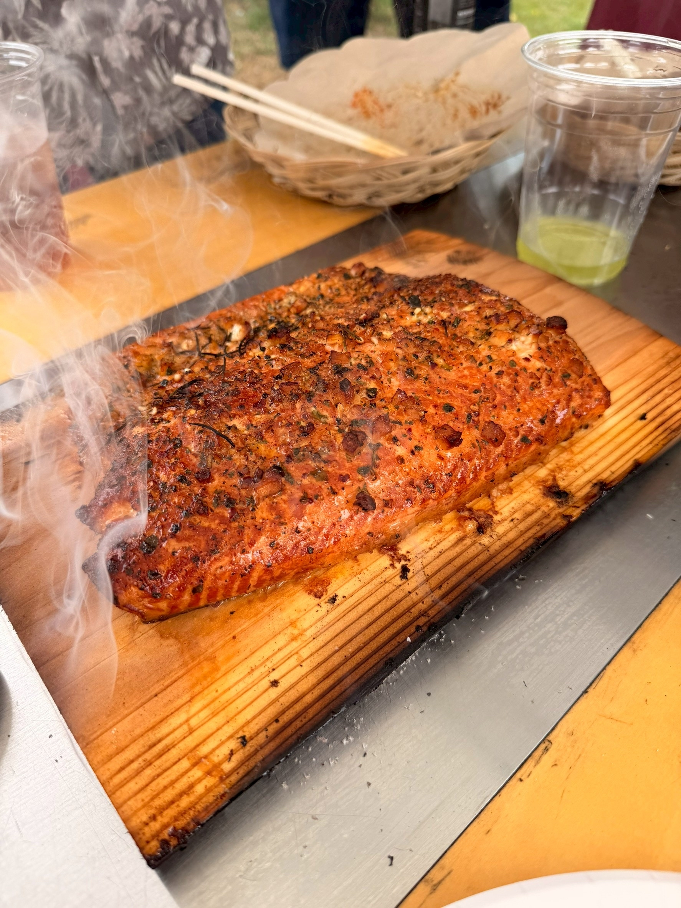

YORON BBQ
JAPANESE NEW BARBECUE
「飲みに行こう」の、となりに。
バーベキュー
しよう。

与論島の当たり前を、
日本の合言葉に。
日本の合言葉に。
yoron-bbq.com
本場アメリカンBBQを、
与論島から。
与論島から。

「飲みに行こう」の、となりに。
【印刷指示】A1・縦（594×841mm）・フチなし。屋内掲示ならマットポスター紙、屋外・半屋外なら合成紙（ユポ）＋ラミネート推奨。
写真は杉板サーモン（撮影実物・無補間のオリジナル 1774×2364px）。A1全面での実効解像度は約71dpi。
補間なしの実解像度のため、旧版（1400pxを2倍補間して見かけ120dpi＝実質60dpi）より実際の描写は良くなっています。
1〜2m以上離れて見る掲示物としては問題ありません（大判掲示は20〜40dpiでも成立する領域です）。
至近距離で見る用途なら A2（420×594mm・約100dpi）で出力してください（@page の size を 420mm 594mm に変えるだけで縮小されます）。
この注記は印刷されません。